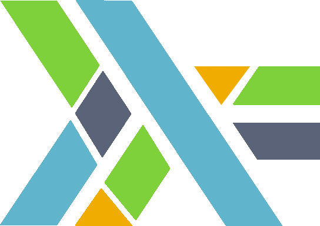

Haskell for Elm developers: giving names to stuff (Part 5 - Semigroups and Monoids)

Hello everyone! In my last post, instead of going for the low-hanging fruit (like I’m doing right now 🤣) I decided to talk about parser combinators because it is a topic that I really enjoy. But now we should proceed on the quest of “giving names to stuff”, so let us talk about Semigroups and Monoids!
What is a Semigroup?
As you may already know, these fancy terms come from algebra, but we are not going to write a mathematical post, we are just going to focus on learning Haskell through simple Elm code examples. So, how are Semigroups defined in Haskell?
class Semigroup a where
(<>) :: a -> a -> aActually it is not something really exciting, a Semigroup is every single type that has a <> operator (or an append function, which behaves the same way) and just allows us to put things together…
The only interesting prerequisite that we need to have in mind to be considered a Semigroup, is that the <> operation should be associative: a <> (b <> c) = (a <> b) <> c.
For Elm, what simple examples come to mind? Of course, lists and strings!
> [1, 2] ++ [3, 4]
[1,2,3,4] : List number
> "dear" ++ " " ++ "semigroups!"
"dear semigroups!" : StringIf you notice, the ++ operator is just sugar for this operation (which we will call mappend from now on) on lists and strings, we are just concatenating stuff together!
In fact, a quick search in elm/core looking up the append function reveals us some Semigroups that we have available in Elm, namely: Array, String and List.
But is this all there is to it? 🤔
Enter the Monoid!
Monoids in Haskell are defined as this:
class Semigroup a => Monoid a where
mappend :: a -> a -> a
mappend = (<>)
mempty :: a
mconcat :: [a] -> a
mconcat = foldr mappend memptyOne of the first things we can notice, is that every Monoid has to have a Semigroup instance, and this is logical because we still want to put things together. In fact, in the following line we already see what we agreed on above, that the funny looking <> is gonna be known as mappend (if you are wondering, the “m” before append stands for Monoid, of course!).
But what makes Monoids special is the next following bit: mempty :: a. Yes, every Monoid NEEDs to have an identity, an element you can mappend to the rest of the elements without changing its intrisic value (this is sometimes also known as the empty case).
Can you think about what this mempty element is for Strings and Lists? 🤔
Of course, the empty list and empty string, respectively!
> [1, 2, 3] ++ []
[1,2,3] : List number
> "immutable" ++ ""
"immutable" : StringNotice now the third thing we can see in the definition of Monoids: mconcat :: [a] -> a, this one already has a default value (so we don’t have to provide it, it comes for free by defining mempty and mappend): foldr mappend mempty, we will talk more about this in the last section of the blogpost.
For now, let us focus for a moment in this mconcat function:
mconcat :: Monoid m => [m] -> mFrom our current intuition about this concept, it should be clear to us that, if we have a list of things that we can join (or mappend), we should be able to get out a single thing out with all the things in that List appended, right? (This sounds way too obvious but please bear with me).
Then, let’s search the elm/core package again for instances of this concat operation:
concat : List (List a) -> List a
concat [[1,2],[3],[4,5]] -- -> [1,2,3,4,5]
concat : List String -> String
concat ["never","the","less"] -- -> "nevertheless"Our usual suspects, List and String… but what happens when we look up empty? 🤔
empty : Array a
empty : Dict k v
empty : Set aArray, Dict and Set also pop up! The trick here is, for Dict and Set the mappend operation is actually called Dict.union and Set.union respectively!
union : Dict comparable v -> Dict comparable v -> Dict comparable v
union : Set comparable -> Set comparable -> Set comparableIn fact, there are some Monoid packages in Elm that reveal us some really interesting stuff:
batch : List (Cmd msg) -> Cmd msg
batch : List (Sub msg) -> Sub msgDoes this remind you of something? Let me refresh your memory:
mconcat :: Monoid m => [m] -> mYES! Some everyday used Monoids in Elm include: Array, List, String, Dict, Set, Cmd and Sub… therefore, as always… YOU HAVE BEEN USING MONOIDS ALL ALONG™️!!! 🤯🤯🤯 (Ok this is already part of the trademark by now 🤣).
Monoids for number 👨🏼🔬
If you have a bit of a curious mind, you might notice the following functions in Elm:
> (+)
<function> : number -> number -> number
> (*)
<function> : number -> number -> numberIf you remember from our very first post, number is a typeclass defined for us in Elm with which we can do very little.
Anyway, by looking at the shape of the addition and multiplication operator, we may realise they both match the mappend type signature! This means that for a certain type, maybe more than one Monoid instance is possible. This is very relevant, as the mempty for this two Monoids (they are called Sum and Product in Haskell) are different:
> 1 + 2 + 0
3 : number
> 3 * 3 * 1
9 : numberYes, the identity value (the one that does not affect the result) for summation is 0, whereas for multiplication is 1! Math is really interesting, isn’t it!? 🤓
The Secret Behind EVERY Fold
But after all this is said and done… why should I bother? Is this just some nerdy terminology??
Well, now comes what was for me one of the most mind-boggling programming moments: have you ever had to reduce (or fold) anything in programming? If so, brace yourself for impact because…
Behind every folding operation, lies hidden a Monoid instance!!!
🤯🤯🤯🤯🤯🤯🤯🤯🤯
Let me give you some time to digest that… remember how earlier we said that we were going to talk a bit more about the fact that mconcat is defined as mconcat = foldr mappend mempty?
I will casually remind you of how foldr is defined in Elm (this also applies to Haskell, of course!):
foldr : (a -> b -> b) -> b -> List a -> bThis means that, every time you are folding anything, you need a “reducing” function and and accumulator. The accumulator, if you are following my train of thought, is the mempty value every Monoid has to have. And the “reducing” function (in the case of foldr is (a -> b -> b)), is just a function from a -> b that is also able to concat two bs! (This means that in reality this “reducing” function is effectively like calling fmap and then mconcat).
So, whether you like it or not, every single time in your life that you had to reduce or fold anything in programming, you were using an underlying Monoid all along! ✨🎩🪄
A brief word about foldMap
In fact, the relationship between folds and Monoids makes itself super evident in the foldMap function that we have available in Haskell (sadly, this is not so common in Elm 😢):
foldMap :: Monoid m => (a -> m) -> [a] -> mSince foldMap requires a Monoid instance, this is like folding but in autopilot for us, because the appending function is taken directly from the Monoid instance!
>>> foldMap Sum [1, 3, 5]
Sum {getSum = 9}
>>> foldMap Product [1, 3, 5]
Product {getProduct = 15}
>>> foldMap (replicate 3) [1, 2, 3]
[1,1,1,2,2,2,3,3,3]This is really convenient and can spare you from using foldr or foldl if you know which is the explicit Monoid from which you want to fold on! 🙌🏻
Acknowledgements
Special thanks to @serras for technical proofreading this post again. 🙏🏻
Thanks to all the people who liked and answered to my previous tweet, it feels nice to think that you are gonna spend some time pouring your thoughts out and some people might even read it! 😅
Hope you learned something about Semigroups and Monoids, and if you already knew all of this, that at least you enjoyed the ride! 😉
If you found joy in this blogpost and would like me to continue the series, please consider sponsoring my work, share it in your social networks and follow me on Twitter! 🙌🏻